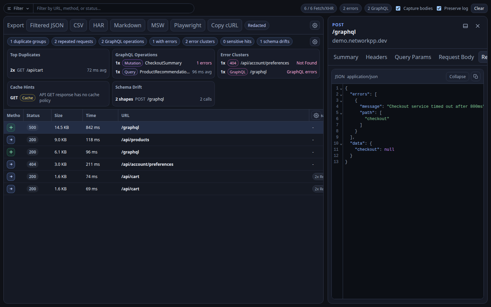
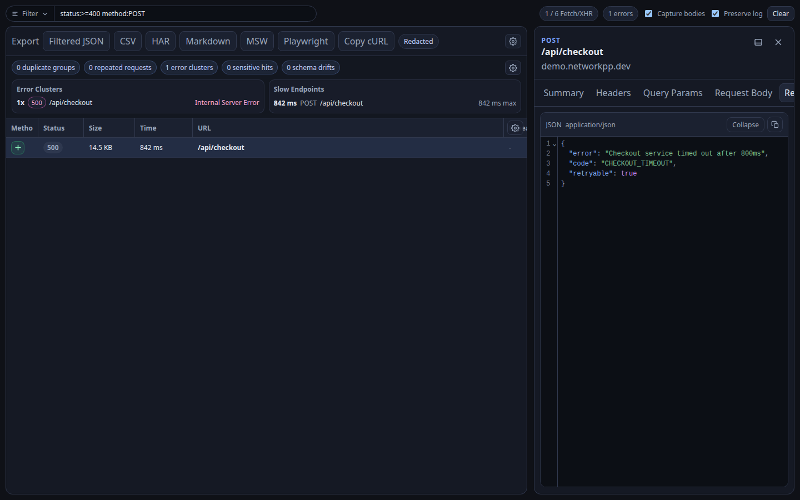
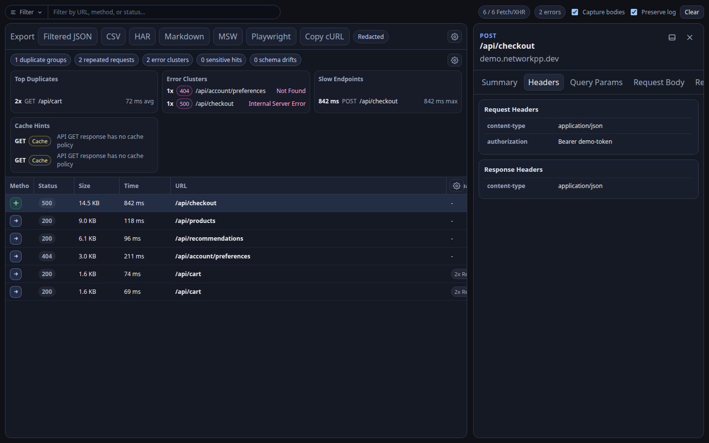
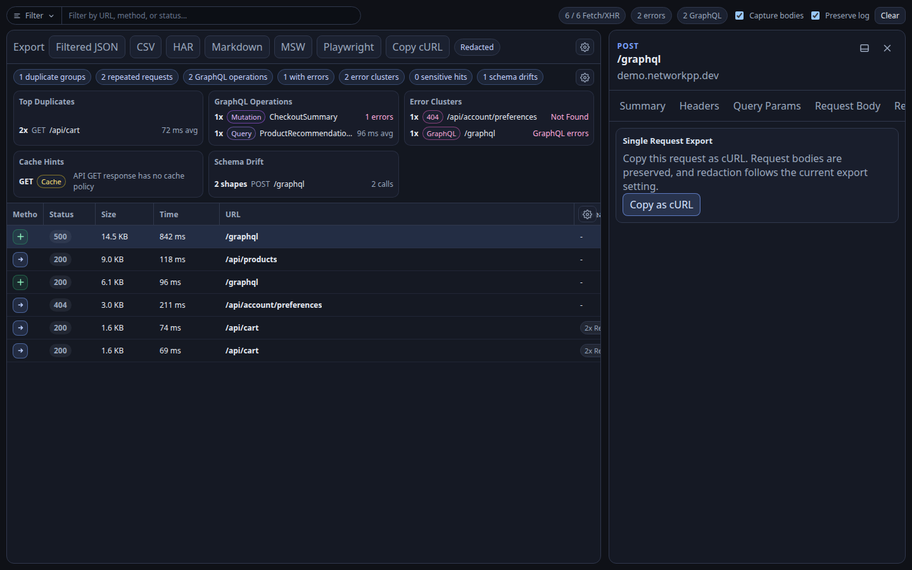

Structured filtering
Combine text search with fields such as method, status, domain, path, and GraphQL-aware filters.
Chrome DevTools extension
Network++ adds a focused DevTools panel for richer request visibility, structured filtering, GraphQL inspection, actionable insights, and redacted local exports.

Native browser tools are powerful, but API-heavy applications can turn the Network tab into a wall of noise. Network++ keeps request data local and makes the common debugging paths easier to follow.
Features
Combine text search with fields such as method, status, domain, path, and GraphQL-aware filters.
Surface operation names, operation types, variables, errors, and repeated GraphQL calls directly in the panel.
Spot duplicates, error clusters, slow endpoints, cache hints, sensitive data, and schema drift signals.
Create JSON, CSV, HAR, Markdown, MSW, Playwright, and cURL artifacts from all or filtered requests.
Request and response data stays local, settings stay in chrome.storage.local, and exports are redacted by default.
Network++ runs as a dedicated Chrome DevTools panel and captures requests only while DevTools is open.
Screenshots
These screenshots use the actual Network++ UI with safe synthetic request data.



Local-first privacy
Network++ avoids remote services. Captured request and response data remains local, and export redaction is enabled by default so debugging artifacts are safer to share.
Install
npm install
npm run buildchrome://extensions.Developer mode.Load unpacked..output/chrome-mv3.Network++ panel.